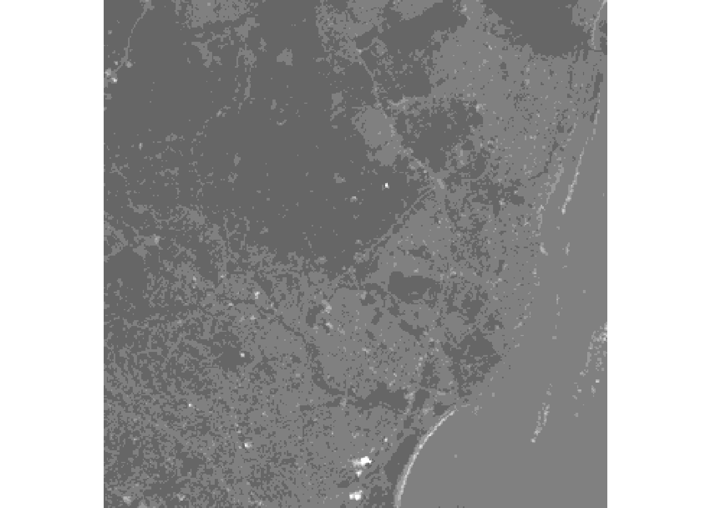
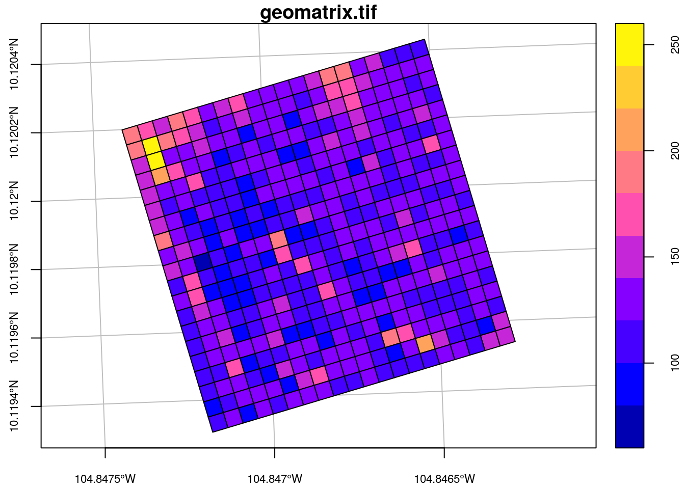

This is the first of a planned series of blogs on the stars project, an R-Consortium funded project for spatiotemporal tidy arrays with R.
The goals of the stars project are
In its current stage stars and (as planned) does not have
The package is loaded by
# devtools::install_github("r-spatial/stars")
library(stars)
## Loading required package: dplyr
##
## Attaching package: 'dplyr'
## The following objects are masked from 'package:stats':
##
## filter, lag
## The following objects are masked from 'package:base':
##
## intersect, setdiff, setequal, union
## Loading required package: magrittr
## Loading required package: sf
## Loading required package: methods
## Linking to GEOS 3.5.1, GDAL 2.2.1, proj.4 4.9.3
## Linking to GDAL 2.2.1Spatiotemporal arrays are stored in objects of class stars; methods for class stars currently available are
methods(class = "stars")
## [1] [ aperm as.data.frame as.tbl_cube
## [5] c coerce dim filter
## [9] image initialize mutate plot
## [13] print pull select show
## [17] slotsFromS3 st_as_sf st_as_sfc st_bbox
## [21] st_coordinates st_crs st_dimensions st_transform
## see '?methods' for accessing help and source codeNote that everything in the stars api may still be subject to change in the next few months.
We can read a satellite image through GDAL, e.g. from a GeoTIFF file in the package:
tif = system.file("tif/L7_ETMs.tif", package = "stars")
x <- tif %>% st_stars
par(mar = rep(0,4))
image(x, col = grey((4:10)/10))
We see that the image is geographically referenced (has coordinate values along axes), and that the object returned (x) has three dimensions: x, y and band, and one attribute.
x
## stars object with 3 dimensions and 1 attribute
## attribute(s):
## /home/edzer/R/x86_64-pc-linux-gnu-library/3.4/stars/tif/L7_ETMs.tif
## Min. : 1.00
## 1st Qu.: 54.00
## Median : 69.00
## Mean : 68.91
## 3rd Qu.: 86.00
## Max. :255.00
## dimension(s):
## from to offset delta refsys point values
## x 1 349 288776 28.5 +proj=utm +zone=25 +south... FALSE NULL
## y 1 352 9120761 -28.5 +proj=utm +zone=25 +south... FALSE NULL
## band 1 6 NA NA NA NA NULLEach dimension has a name; the meaning of the fields of a single dimension are:
| field | meaning |
|---|---|
| from | the origin index (1) |
| to | the final index (dim(x)[i]) |
| offset | the start value for this dimension |
| delta | the step size for this dimension |
| refsys | the reference system, or proj4string |
| point | logical; whether cells refer to points, or intervals |
| values | the sequence of values for this dimension (e.g., geometries) |
This means that for an index i (starting at \(i=1\)) along a certain dimension, the corresponding dimension value (coordinate, time) is \(\mbox{offset} + (i-1) \times \mbox{delta}\). This value then refers to the start (edge) of the cell or interval; in order to get the interval middle or cell centre, one needs to add half an offset.
Dimension band is a simple sequence from 1 to 6. Although bands refer to colors, their wavelength values (or b in the values field.
For this particular dataset (and most other raster datasets), we see that offset for dimension y is negative: this means that consecutive array values have decreasing \(y\) values: cells are ordered from top to bottom, opposite the direction of the \(y\) axis.
st_stars reads all bands from a raster dataset, or a set of raster datasets, into a single stars array structure. While doing so, raster values (often UINT8 or UINT16) are converted to double (numeric) values, and scaled back to their original values if needed.
The data structure stars is an extension of the tbl_cube found in dplyr; we can convert to that by
as.tbl_cube(x)
## Source: local array [737,088 x 3]
## D: x [dbl, 349]
## D: y [dbl, 352]
## D: band [int, 6]
## M: /home/edzer/R/x86_64-pc-linux-gnu-library/3.4/stars/tif/L7_ETMs.tif [dbl]The GDAL model can deal also with spatial rasters that are regular but not aligned with \(x\) and \(y\): affine grids. An example is given here:
par(cex.axis = .7) # font size axis tic labels
geomatrix = system.file("tif/geomatrix.tif", package = "stars")
geomatrix %>% st_stars %>% st_as_sf(as_points = FALSE) %>%
plot(axes =TRUE, main = "geomatrix.tif", graticule = TRUE)
Looking at the dimensions
geomatrix %>% st_stars %>% st_dimensions
## from to offset delta geotransform
## x 1 20 1841002 1.5 1841000, 1.5, -5, 1144000, -5, -1.5
## y 1 20 1144003 -1.5 1841000, 1.5, -5, 1144000, -5, -1.5
## refsys point values
## x +proj=utm +zone=11 +datum... TRUE NULL
## y +proj=utm +zone=11 +datum... TRUE NULLfurther reveals that we now have a geotransform field shown in the dimension table; this is only displayed when the affine parameters are non-zero. The geotransform field has six parameters, \(gt_1,...,gt_6\) that are used to transform internal raster coordinates (column pixel \(i\) and row pixel \(j\)) to world coordinates (\(x\), \(y\)):
\[x = gt_1 + (i-1) gt_2 + (j-1) gt_3\]
\[y = gt_4 + (i-1) gt_5 + (j-1) gt_6\]
When \(gt_3\) and \(gt_5\) are zero, the \(x\) and \(y\) are parallel to \(i\) and \(j\), which makes it appear unrotated.
Another example is when we read raster time series model outputs in a NetCDF file, e.g. by
prec = st_stars("data/full_data_daily_2013.nc")(Note that this 380 Mb file is not included; data are described here, and were downloaded from here).
We see that
precFor this dataset we can see that
Model data are often spread across many files. An example of a 0.25 degree grid, global daily sea surface temperature product is found here; a subset of the 1981 data was downloaded from here.
We read the data by giving st_stars a vector with character names:
x = c(
"avhrr/avhrr-only-v2.19810901.nc",
"avhrr/avhrr-only-v2.19810902.nc",
"avhrr/avhrr-only-v2.19810903.nc",
"avhrr/avhrr-only-v2.19810904.nc",
"avhrr/avhrr-only-v2.19810905.nc",
"avhrr/avhrr-only-v2.19810906.nc",
"avhrr/avhrr-only-v2.19810907.nc",
"avhrr/avhrr-only-v2.19810908.nc",
"avhrr/avhrr-only-v2.19810909.nc"
)
(y = st_stars(x, quiet = TRUE))Next, we select sea surface temperature (sst), and drop the singular zlev (depth) dimension using adrop:
library(abind)
z <- y %>% select(sst) %>% adropWe can now graph the sea surface temperature (SST) using ggplot, which needs data in a long table form, and without units:
df = as.data.frame(z)
df$sst = unclass(df$sst)
library(ggplot2)
library(viridis)
library(ggthemes)
ggplot() +
geom_tile(data=df, aes(x=x, y=y, fill=sst), alpha=0.8) +
facet_wrap("time") +
scale_fill_viridis() +
coord_equal() +
theme_map() +
theme(legend.position="bottom") +
theme(legend.key.width=unit(2, "cm"))Like tbl_cube, stars arrays have no limits to the number of dimensions they handle. An example is the origin-destination (OD) matrix, by time and travel mode.
We create a 5-dimensional matrix of traffic between regions, by day, by time of day, and by travel mode. Having day and time of day each as dimension is an advantage when we want to compute patters over the day, for a certain period.
nc = st_read(system.file("gpkg/nc.gpkg", package="sf"))
## Reading layer `nc.gpkg' from data source `/home/edzer/R/x86_64-pc-linux-gnu-library/3.4/sf/gpkg/nc.gpkg' using driver `GPKG'
## Simple feature collection with 100 features and 14 fields
## geometry type: MULTIPOLYGON
## dimension: XY
## bbox: xmin: -84.32385 ymin: 33.88199 xmax: -75.45698 ymax: 36.58965
## epsg (SRID): 4267
## proj4string: +proj=longlat +datum=NAD27 +no_defs
to = from = st_geometry(nc) # 100 polygons: O and D regions
mode = c("car", "bike", "foot") # travel mode
day = 1:100 # arbitrary
library(units)
##
## Attaching package: 'units'
## The following object is masked from 'package:base':
##
## %*%
units(day) = make_unit("days since 2015-01-01")
hour = set_units(0:23, h) # hour of day
dims = st_dimensions(origin = from, destination = to, mode = mode, day = day, hour = hour)
(n = dim(dims))
## origin destination mode day hour
## 100 100 3 100 24
traffic = array(rpois(prod(n), 10), dim = n) # simulated traffic counts
(st = st_stars(list(traffic = traffic), dimensions = dims))
## stars object with 5 dimensions and 1 attribute
## attribute(s), of first 1e+05 cells:
## traffic
## Min. : 0.000
## 1st Qu.: 8.000
## Median :10.000
## Mean : 9.991
## 3rd Qu.:12.000
## Max. :25.000
## dimension(s):
## from to offset delta
## origin 1 100 NA NA
## destination 1 100 NA NA
## mode 1 3 NA NA
## day 1 100 1 (days since 2015-01-01) 1 (days since 2015-01-01)
## hour 1 24 0 h 1 h
## refsys point
## origin +proj=longlat +datum=NAD2... NA
## destination +proj=longlat +datum=NAD2... NA
## mode NA NA
## day NA NA
## hour NA NA
## values
## origin MULTIPOLYGON (((-81.47276 3..., ..., MULTIPOLYGON (((-78.65572 3...
## destination MULTIPOLYGON (((-81.47276 3..., ..., MULTIPOLYGON (((-78.65572 3...
## mode car, ..., foot
## day NULL
## hour NULLThis array contains the simple feature geometries of origin and destination so that we can directly plot every slice without additional table joins. If we want to represent such an array as a tbl_cube, the simple feature geometry dimensions need to be replaced by indexes:
st %>% as.tbl_cube
## Source: local array [72,000,000 x 5]
## D: origin [int, 100]
## D: destination [int, 100]
## D: mode [chr, 3]
## D: day [[(days since 2015-01-01)], 100]
## D: hour [[h], 24]
## M: traffic [int]The following demonstrates how dplyr can filter bike travel, and compute mean bike traffic by hour of day: